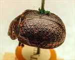
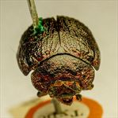
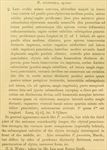

Click on images to enlarge
{kind=link}

Paropsis sylvicola type specimen, lateral view
{kind=link}

Paropsis sylvicola type specimen, anterior view
{kind=link}

Paropsis sylvicola, description
Name
Trachymela versuta (Blackburn, 1896)
Type specimen
Location: BMNH
Label data: “Type” (red-bordered circle), “6156 For. Reefs T”, “Blackburn coll. 1910-236.”, “Paropsis sylvicola Blackb.”
Female; Size: 10.4 x 7.9 x 4.8 mm; A-A: 1.62 mm
This looks most like a very large Ta25; head black anterior to fronto-clypeal suture; pronotum densely and deeply punctured on disc, with vague black colouring; scutellum smooth; elytra with large punctures and a dense scatter of verrucae and black, elevated interstices; all trochanters with a scatter of setae; prosternum setose. Its type locality is Forest Reefs, a locality near the town of Orange in central-western N.S.W.
Original description
[Original description shown in figure, translated from Latin using ChatGPT, 03/2026]
(Female) Broadly oval; less convex, the greatest height (seen from the side) placed at or a little behind the middle of the elytra; less shining; pitchy; head and pronotum (the latter more or less shaded with pitchy), with some spots on the elytra (especially placed at the sides) and the antennae (these darkened toward the apex) reddish-orange; head rather closely and finely somewhat rugulose-punctate; prothorax longer than broad in the ratio about 2⅔ to 1, slightly widened beyond the middle from the apex, behind the apex distinctly transversely impressed, rather closely rugulose and somewhat strongly (at the sides very rugulose) punctate, sides moderately arcuate, not flattened, posterior angles obtuse; scutellum more or less punctulate; elytra distinctly depressed beneath the humeral callus, behind the base transversely scarcely impressed, rather closely and strongly subseriately (posteriorly more finely, laterally more rugosely) punctate, with fairly numerous smooth verrucae arranged more or less in rows (here and there placed in less distinct ridges), anteriorly less distinctly arranged than posteriorly; interstices somewhat rugulose (more rugulose laterally, scarcely so toward the apex); marginal area narrower but (the submedian part excepted) separated from the disc by a groove fairly distinct; humeral callus much more distant from the suture than from the lateral margin; basal ventral segment less sparsely and less finely punctulate; third antennal segment rather longer than the fourth. Length 4¼–4¾ lines (~9.5-10.75 mm), width 3–3½ lines (~6.75-7.9 mm).
Notes
Blackburn (1896) deals with P. sylvicola as part of his subgroup ii (i.e., those species without "strongly marked characters", whose greatest height is not or scarcely in front of the middle of the elytral margin and whose elytra are depressed under the humeral callus). Within that group, he characterises it as:
(1) inner edge of humeral callus distinctly nearer to lateral margin of elytra than to suture;
(2) sides of prothorax more or less explanate;
(3) elytra not having well-defined continuous costae;
(4) puncturation of the elytra not particularly fine;
(5) upper surface of elytra in general, or at least the verrucae, black or nearly so;
(6) explanate margins of prothorax wide (each about 1/3 of width of discal part);
(7) postbasal impression of elytral disc feeble;
(8) prothorax at its widest notably behind the middle;
(9) elytral puncturation well-defined, and seriate to apex;
(10) legs dark.
Though this appears similar to Ta25, the size range (and the measured size of the type) exceed the normal size range of that species by over 1 mm. It also closely resembles T. acclivis (Ta210), which shares with it similarly sculptured elytra and the setose trochanters and would be within the right range of sizes. Blackburn (1907) also places acclivis into subgroup ii, distinguishing it in the key from sylvicola only by its testaceous (rather than dark) legs.
References
Blackburn, T. 1896, "Revision of the genus Paropsis. Part I", Proceedings of the Linnean Society of New South Wales, vol. 21, no. 4, 637-693 (page 658).
Copyright © 2026. All rights reserved.